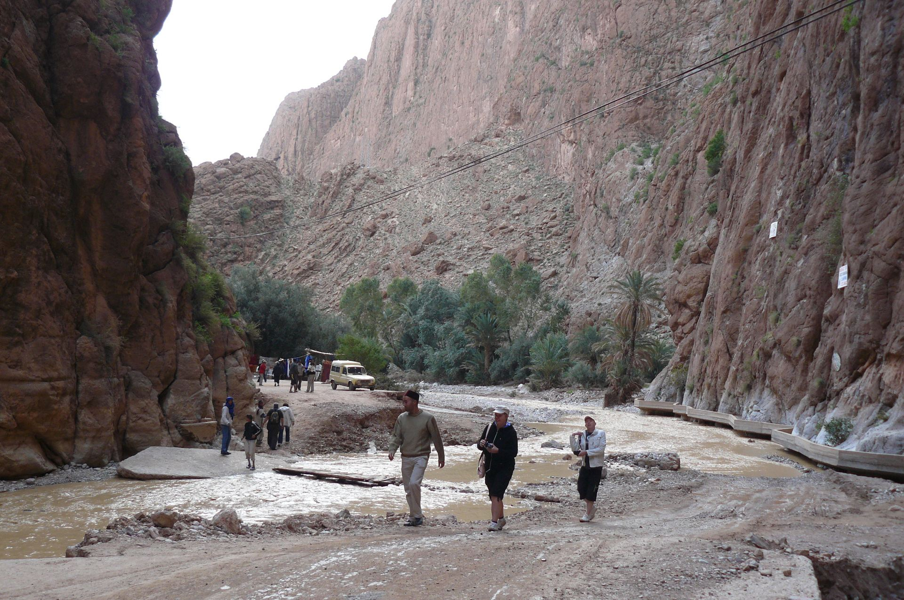
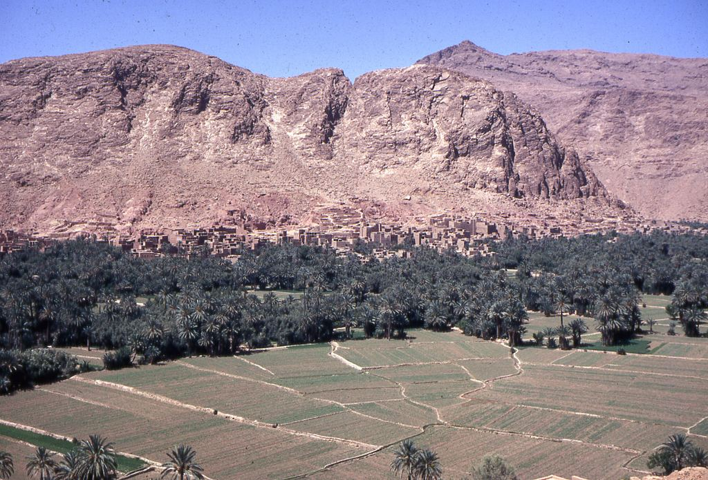
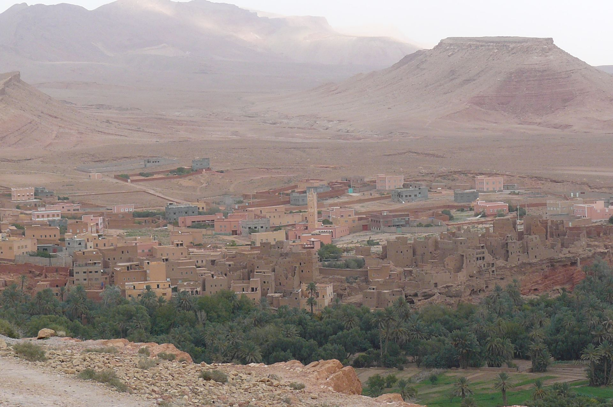
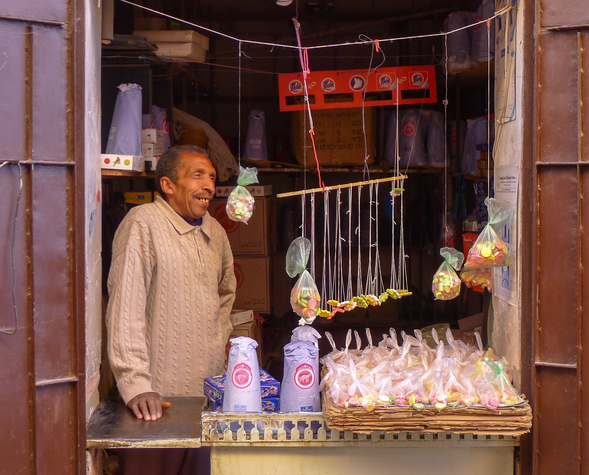
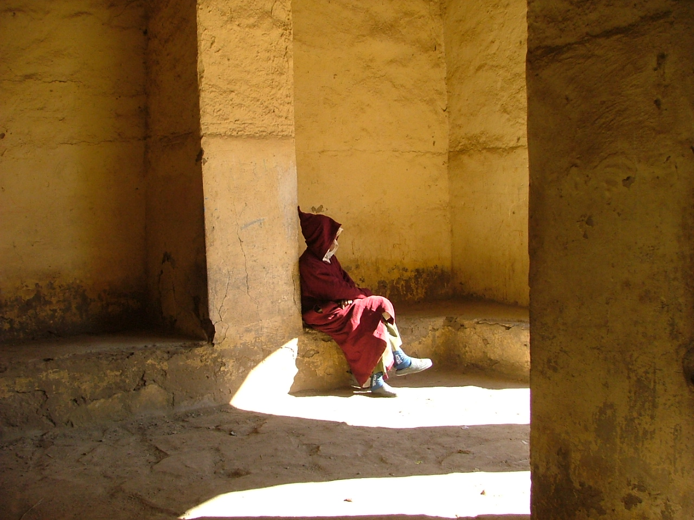
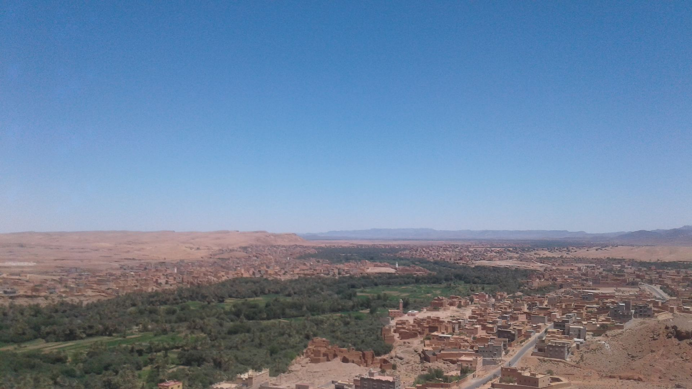
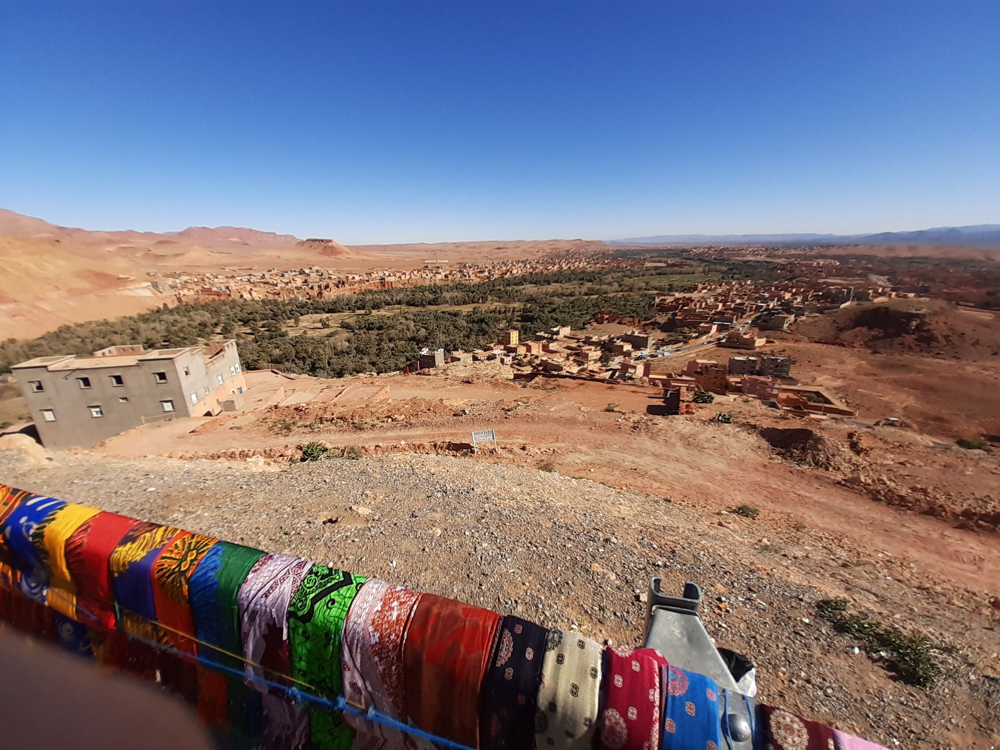
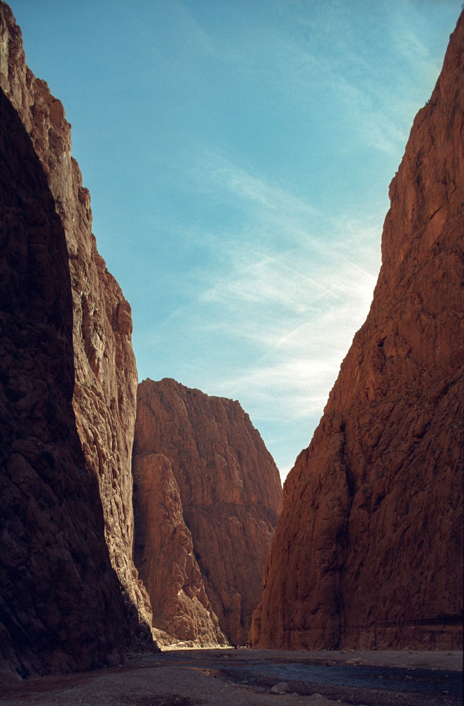

Explore
Must-See Attractions
From dramatic gorges to ancient kasbahs, Tineghir offers unforgettable experiences for every traveler.

Todra Gorge
A spectacular canyon with 300-meter high walls, perfect for hiking and rock climbing adventures.
📍 Todra Valley · 15 km from town

Palm Grove (Palmerie)
A lush oasis stretching along the Todra River with thousands of date palms and traditional villages.
📍 Todra River · in town

Kasbah El Glaoui
A historic mud-brick kasbah in the heart of Tineghir, showcasing traditional Berber architecture and panoramic city views.
📍 City center

Traditional Souks
Browse vibrant markets filled with handcrafted carpets, silver jewelry, and spices.
📍 Medina quarter · in town

CultureMedina of Tineghir
Wander through the old medina with its narrow alleys, traditional Berber architecture, and lively local atmosphere.
📍 Old town

Dades Valley
An hour west: hairpin roads, the Monkey Fingers rock formations, and kasbah-dotted valleys made for slow driving.
📍 1 hr west · day trip

Todra Valley Villages
Tamtattouchte, Aït Hani and hillside ksour where Berber families farm terraced plots between river and cliff.
📍 Todra Valley · half-day

Jebel Saghro
South of the city, a volcanic massif of black peaks and nomad trails — Morocco's great winter trekking ground.
📍 South · 3–6 day treks